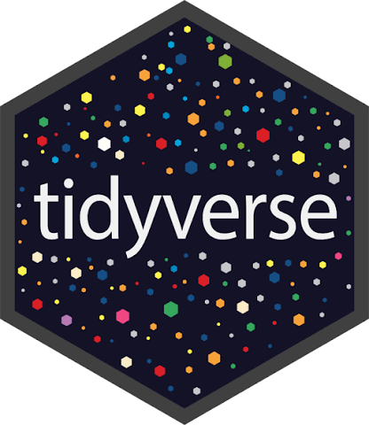
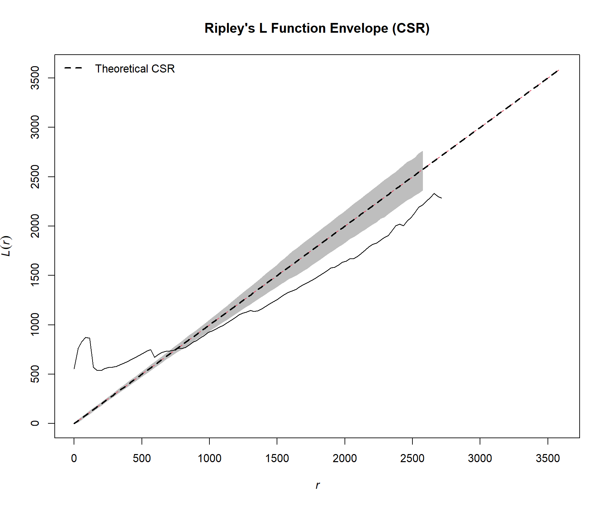
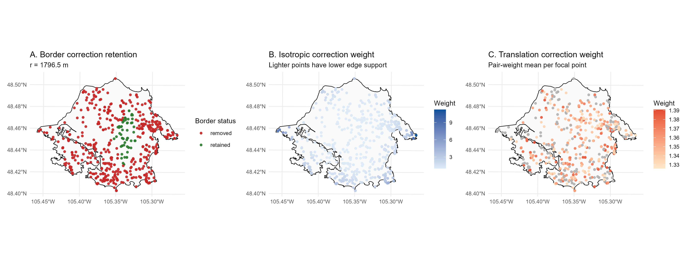
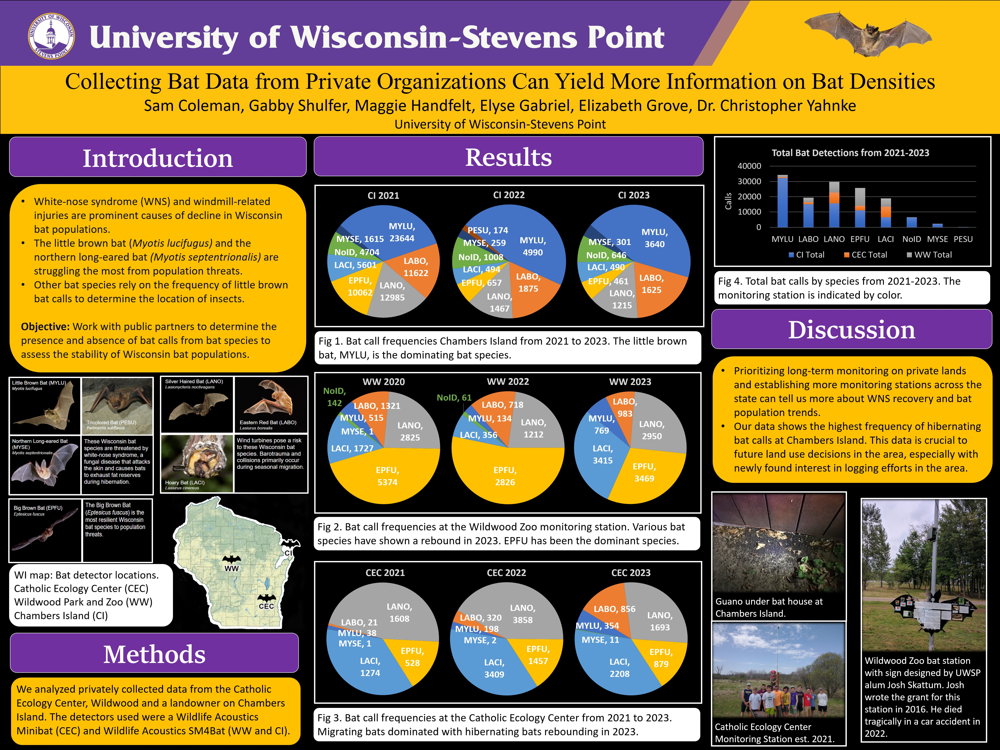

tidyverse
A cohesive collection of R packages designed for data manipulation, cleaning, and visualization. Packages include: ggplot2, dplyr, tidyr, readr, purrr, tibble, stringr and lubridate.
View Usage ExampleWildlife Statistician & Data Scientist
Specializing in R, ArcGIS Pro, and Spatial Ecology


I am a wildlife statistician passionate about bridging the gap between complex ecological data and actionable management strategies. With a strong foundation in R programming, spatial analysis, and reproducible research, I specialize in turning messy field data into clear insights. My work ranges from estimating bat population dynamics via an NB GAMM from a nested hierarchical structure of ARU deployments, to developing various plots to aid Cooper's hawk researchers in identifying spatial and temporal trends. My work is multifaceted, coming from a field technician background, I am able to identify the challenges of field data collection and translate them into robust statistical models and practical ecological applications. Anything from accounting for habitat characteristics to addressing detection biases, to even accounting for uneven sampling effort. I aim to contribute meaningful insights that support wildlife conservation and inform management decisions.

A cohesive collection of R packages designed for data manipulation, cleaning, and visualization. Packages include: ggplot2, dplyr, tidyr, readr, purrr, tibble, stringr and lubridate.
View Usage Example
Spatial point pattern analysis toolkit for exploratory analysis, modeling, and hypothesis testing of spatial data. Essential for wildlife distribution and habitat selection studies.

Supports reading, writing, and manipulating simple feature spatial data. Integrates seamlessly with tidyverse for efficient geospatial data processing and mapping workflows.

Fits linear mixed-effects models (LMMs) and generalized LMMs. Handles hierarchical and nested data structures common in ecological monitoring studies.

Extends mixed modeling capabilities with support for zero-inflation, dispersion formulas, and flexible covariance structures. Ideal for complex count data in ecology.

Generalized Additive Models with automatic smoothness estimation. Perfect for modeling non-linear relationships in ecological data without pre-specifying functional forms.

Next-gen scientific publishing system that integrates R code, narrative text, and outputs. Produces reproducible reports, presentations, and publications in multiple formats.

Build interactive web applications directly from R. Enables stakeholders to explore data through dynamic dashboards without requiring programming knowledge.

Worked with multi-decadal long data set to produce a wide variety of maps to better visualize
Cooper's Hawk spatial distribution in Victoria, BC.
Worked with the spatstat package for spatial point pattern analysis, Clark-evans
index, and other spatial statistics
to understand habitat selection and distribution patterns.

Developed hierarchical Bayesian models using brms to analyze camera trap data across
fragmented habitats. Published in Ecological Applications.
Deployed bat detectors to collect data for a nested heirarchical NB GAMM analysis using
tidyverse and mgcv. Identified seasonal trends in bat activity
in open, edge and forested areas.
Compared GLM, GAM, and Random Forest approaches for predicting habitat suitability. Focused on model validation and spatial autocorrelation.

Various plots and visual materials explaining the characteristics of bat community activity and trends on private lands.

Owl ectoparasite analysis detailing mite and lice averages and abundances found on Barred and Great Horned Owl roadkill and deceased rehabilitation specimens.